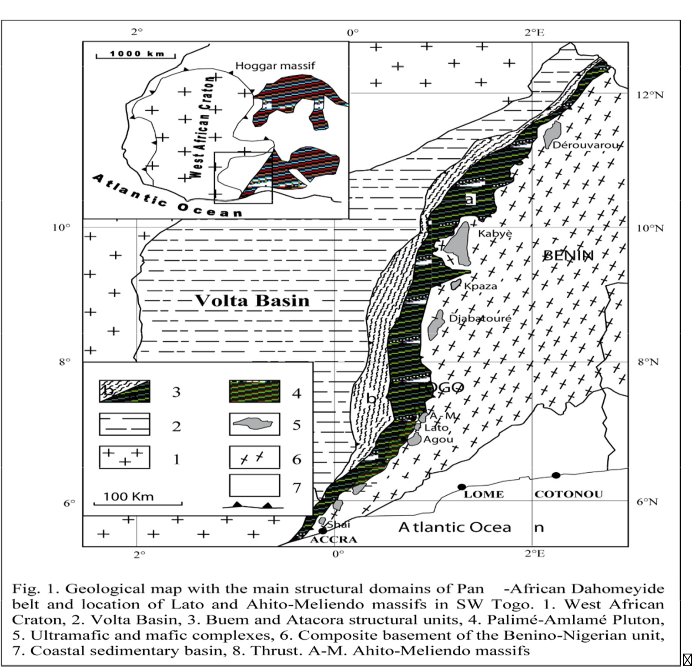

Major, Trace Elements and Sr-Nd Isotope Characteristics of High-Pressure and Associated Metabasite from Pan-African Suture Zone of Southern Togo, West

Resumo em Português
Eclogitos e anfibolitos com ou sem granada, provenientes das colinas de Lato, Toutouto e Ahito-Meliendo, no sul do Togo, foram analisados quanto à geoquímica da rocha total e às composições isotópicas de Sr e Nd. As composições de elementos maiores e traços dessas rochas indicam que os magmas precursores pertencem a séries toleíticas a subalcalinas, que podem ter evoluído por cristalização fracionada. No entanto, alguns eclogitos intensamente cisalhados das colinas do sul de Lato exibem padrões secundários de perda de elementos de terras raras leves (LREE) não típicos de protólitos magmáticos. As razões medidas e os valores de ε foram recalculados para 800 Ma. Os valores iniciais de 87Sr/86Sr para os eclogitos e anfibolitos variam de 0,70215 a 0,70460 e de 0,70126 a 0,70307, respectivamente. Os valores de 147Sm/144Nd para eclogitos e anfibolitos variam de 0,14510 a 0,183320 e são inferiores aos valores condríticos de 0,1966. Os valores gerais de 143Nd/144Nd variam de 0,512804 a 0,512862, correspondendo a ƐNd(T) inicial de +4,9 a +8,8, que resultaram em idades modelo TDM de 1,6 a 0,72 Ga. Um eclogito da colina sul de Lato apresenta valores de 143Nd/144Nd de 0,512862, correspondendo a valores iniciais de ƐNd(T) de +8,83 e idade modelo TDM de 0,72 Ga, o que restringe sua idade mínima. No entanto, eclogitos do norte de Lato e anfibolitos granatíferos apresentaram idades modelo mais antigas, de 1,65 e 1,43 Ga, respectivamente, sugerindo contaminação crustal da pilha metassedimentar circundante.